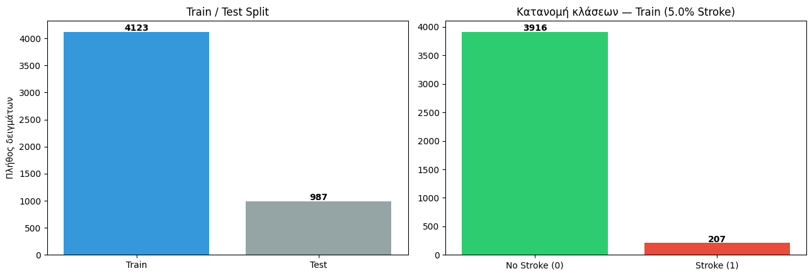
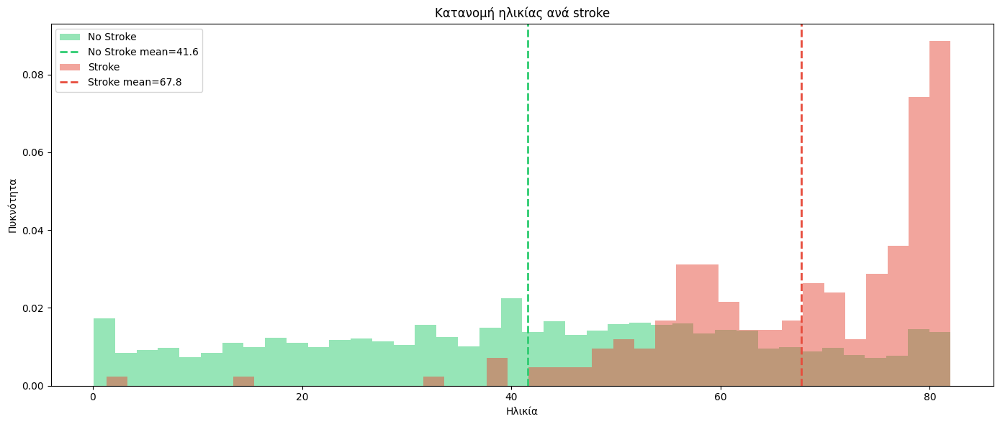

Το πρόβλημα: - Εγκεφαλικό: 1η αιτία αναπηρίας, 2η αιτία θανάτου - 1 στα 4 άτομα θα υποστεί εγκεφαλικό (WHO) - Binary classification: stroke (1) ή όχι stroke (0)
Προκλήσεις: - Μόλις 5% των ασθενών
με stroke - 201 BMI τιμές "N/A" (3.9%) - 5/10 μεταβλητές
κατηγορικές , ordinal bias
| Μεταβλητή | Τύπος |
|---|---|
gender |
Κατηγορική |
age |
Αριθμητική |
hypertension |
Δυαδική |
heart_disease |
Δυαδική |
ever_married |
Κατηγορική |
work_type |
Κατηγορική (5) |
Residence_type |
Κατηγορική |
avg_glucose_level |
Αριθμητική |
bmi |
Αριθμητική |
smoking_status |
Κατηγορική (4) |
stroke |
Label (5%) |
5.110 εγγραφές, 10 προγνωστικές + 1 label
| Στάδιο | Train | Test | Στήλες | Τι συμβαίνει |
|---|---|---|---|---|
| Bronze | 5.110 | 5.110 | 11 | Καθαρισμός, split 80/20 |
| Silver | 4.123 | 987 | 16 | Imputation, StringIndexer |
| Gold | 7.832 | 987 | 2 | OneHot, Scaler, SMOTE |
💡 Το preprocessing είναι ο μοναδικός παραγωγός. Τα μοντέλα διαβάζουν μόνο Gold.
Bronze , Καθαρισμός & Split: 1. Φόρτωση CSV,
αφαίρεση id 2. "N/A" → null → Double (201 BMI
κενά) 3. Train/Test split (seed=42, 80/20)
Imputation , Median (27.90): - Υπολογισμός από train μόνο - Εφαρμογή και στα δύο σύνολα - Αποφυγή data leakage , test ανέγγιχτο
Silver , StringIndexer (5 κατηγορικές):
| Μεταβλητή | Δείκτες |
|---|---|
gender |
0–2 |
ever_married |
0–1 |
work_type |
0–4 |
Residence_type |
0–1 |
smoking_status |
0–3 |
SMOTE: 207 → 3.916 stroke δείγματα (50-50)
One-Hot: 16 δυαδικές στήλες → 21 διαστάσεις SparseVector






| Μοντέλο | Πλεονέκτημα |
|---|---|
| MLP | Μη-γραμμικά όρια |
| SVM (Linear SVC) | Αποδοτικό σε sparse |
| Random Forest | Feature importance |
| Logistic Regression | Baseline, γρήγορο |
Διαδικασία: 5-fold CV, grid search, class weights
Imputer → StringIndexer
→ OneHotEncoder
→ VectorAssembler
→ StandardScaler
→ Classifier| Ταξινομητής | Spark Class |
|---|---|
| Random Forest | RandomForestClassifier |
| Logistic Regression | LogisticRegression + weightCol |
| Μετρική | Τι μετρά | Προσοχή |
|---|---|---|
| Accuracy | % σωστών προβλέψεων | Παραπλανητική (95% dummy) |
| Precision | Πόσα predicted είναι όντως stroke | False alarms |
| Recall | Πόσα πραγματικά stroke βρήκαμε | Κλινικά κρίσιμο |
| F1-Score | Αρμονικός μέσος P & R | Ισορροπία |
| ROC-AUC | Διαχωριστική ικανότητα | Ανεξάρτητο από threshold |
⚠️ Αξιολόγηση αποκλειστικά στο test set (987, φυσικό imbalance 4.3%).
Trade-offs:
| Απόφαση | Γιατί |
|---|---|
| Median imputation | Ανθεκτική σε outliers |
| SMOTE | Διατηρεί όλα τα δεδομένα |
| OneHotEncoder | Αποφυγή ordinal bias |
| withMean=False | Διατήρηση sparsity |
| Parquet | Συμπίεση, schema |
Συμπεράσματα: